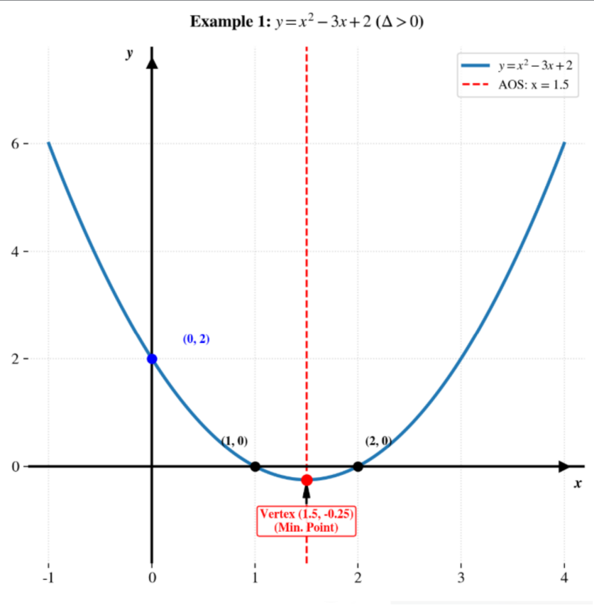
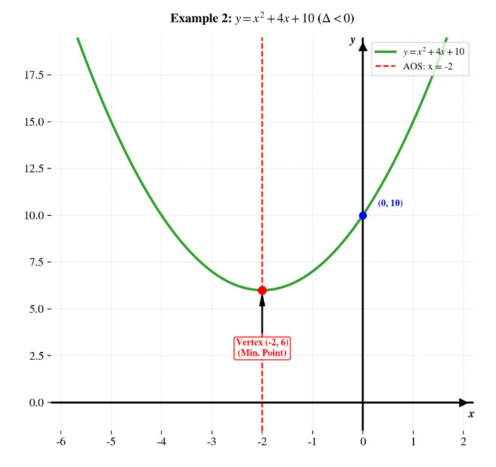
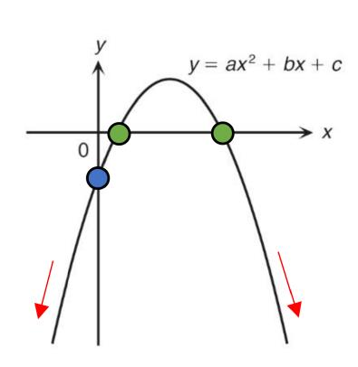
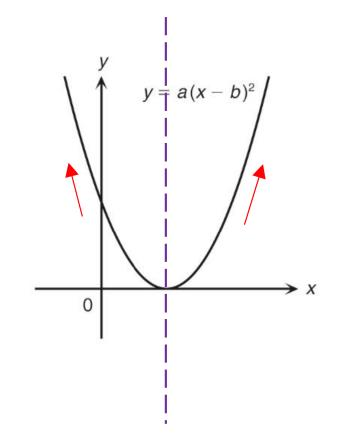
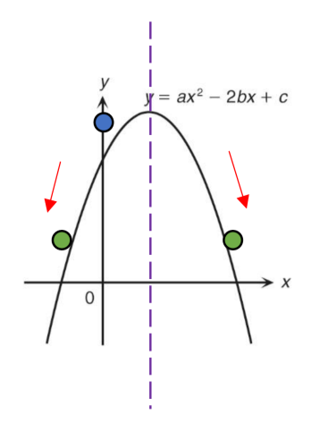
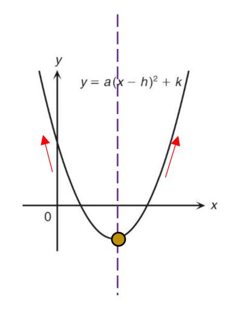

Order of features
You may follow the following order of features to sketch the graph of a quadratic function:
- y-intercept
- Direction of opening
- x-intercepts (if any)
- Vertex (if needed)
Sketch a parabola and read off the signs.
You may follow the following order of features to sketch the graph of a quadratic function:
Sketch the quadratic function y = x² − 3x + 2.
Locating the x-intercepts: 1 and 2; y-intercept: 2. Direction: open upwards.

Sketch the quadratic function y = x² + 4x + 10.
y-intercept: 10; direction: open upwards; AOS: x = −2. Since there is no x-intercepts, sub x = −2 to find the vertex: (−2, 6).

The figure shows the graph of y = ax² + bx + c. Which of the following is true?

A. a > 0, c > 0 and b² > 4ac
B. a > 0, c < 0 and b² < 4ac
C. a < 0, c < 0 and b² > 4ac
D. a < 0, c < 0 and b² < 4ac
P.S. Sign of b can be evaluated in two ways:
The figure shows the graph of y = a(x − b)². Which of the following is true?

0">A. a > 0 and b > 0
B. a > 0 and b < 0
C. a < 0 and b > 0
D. a < 0 and b < 0
Refer to the graph y = ax² − 2bx + c. Which of the following is true?

I. a < 0
II. c < 0
III. b < 0
IV. ac < b²
A. I and III only
Refer to the graph of y = a(x − h)² + k. Which of the following is true?

0 and k < 0">I. a > 0
II. h > 0
III. k < 0
A. I and II only
B. I and III only
C. II and III only
D. I, II and III